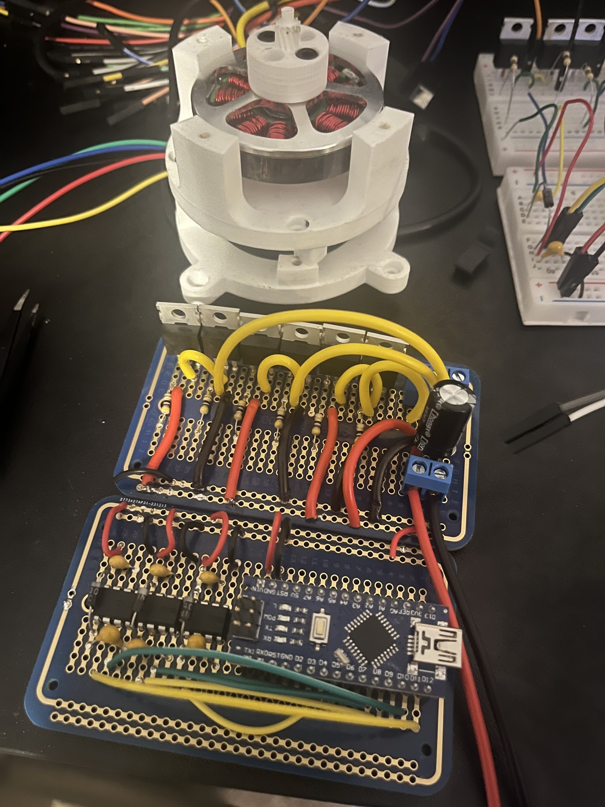
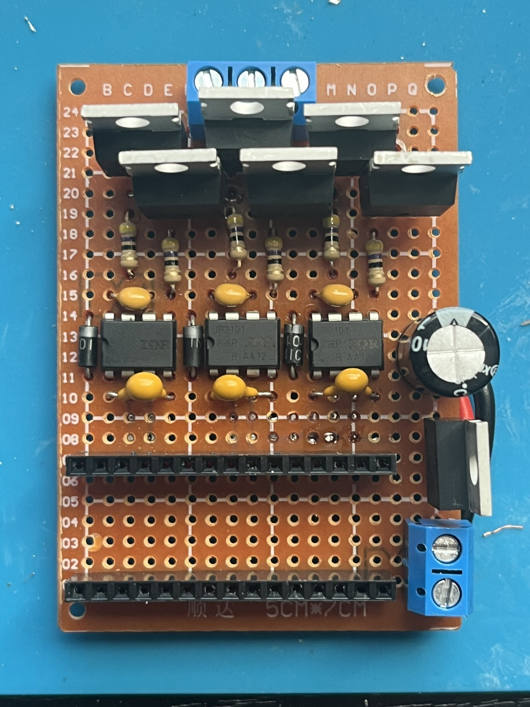
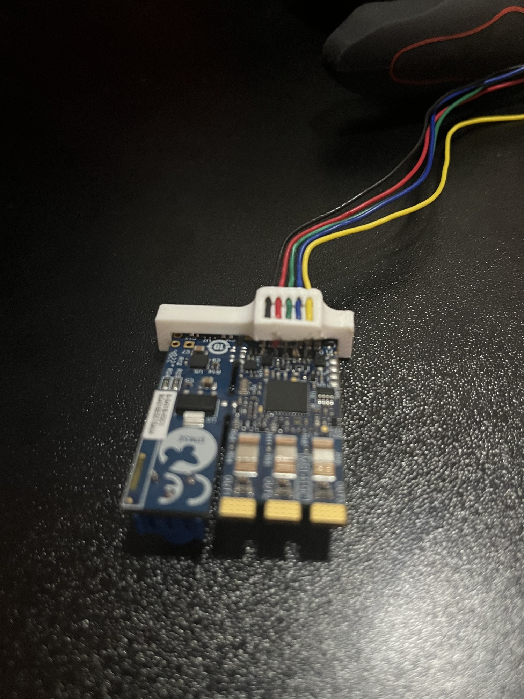
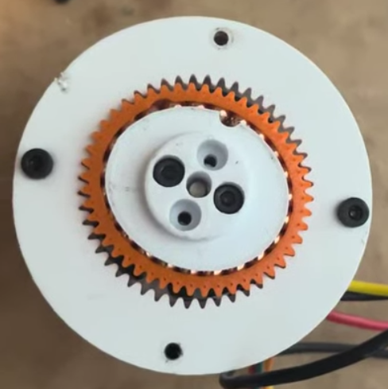
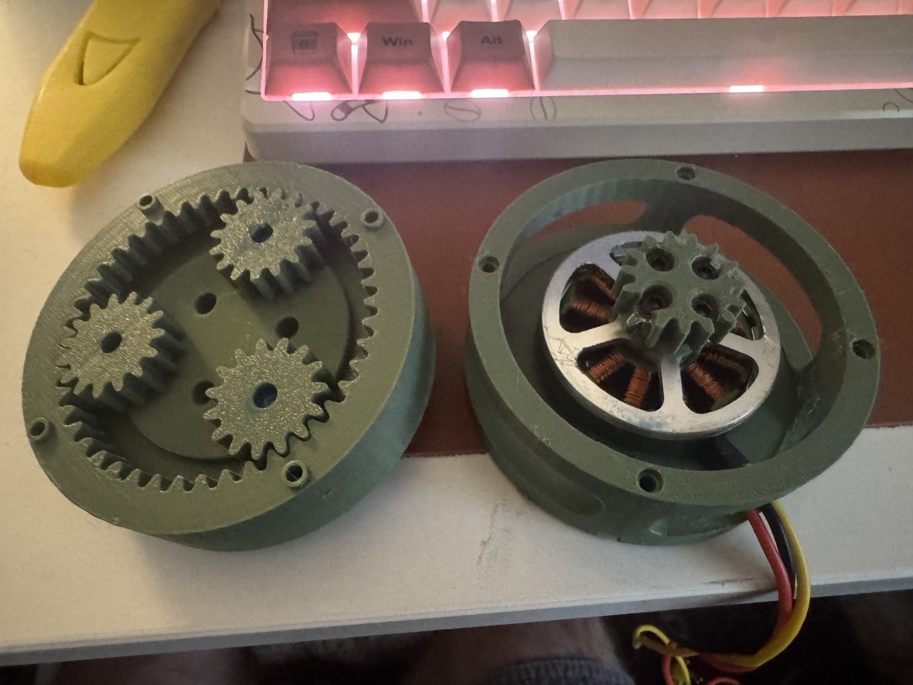

Embedded / Motion
Custom BLDC Robot Joint
Developing a compact, affordable robotic joint using a brushless DC motor, custom motor-control electronics, and a 3D-printed gearbox.

Overview
This project focuses on developing a compact, affordable robotic joint using a brushless DC motor, custom motor-control electronics, and a 3D-printed reduction gearbox. My goal is to develop an integrated actuator capable of precise closed-loop control that can be used across future robotics projects.
The project has involved experimenting with different motor driver designs, mechanical transmissions, and control techniques. Each iteration has helped me better understand the trade-offs between cost, backlash, backdrivability, torque, and mechanical complexity.
Motor Driver Electronics
I initially developed my own three-phase BLDC motor driver to gain hands-on experience with the electronics behind brushless motor control. The circuit used three IR2101 gate drivers and six MOSFETs arranged in a three-phase bridge configuration.
I first constructed the circuit on a solderable breadboard before building a second version on perfboard. Working directly with these circuits allowed me to explore MOSFET switching, gate driving, PWM generation, and power electronics.


Although I was able to get my custom motor driver working, I ultimately decided to use the STM32-based B-G431B-ESC1 development board for the next stage of development. This provided a compact motor-control platform with integrated power electronics and current sensing, allowing me to focus on developing and testing control algorithms without simultaneously debugging custom hardware.

The long-term goal remains to develop a custom motor controller PCB that can be integrated directly into the robotic joint.
Mechanical Design and Gearbox Development
A major component of this project has been developing a compact reduction gearbox that can be manufactured using accessible 3D-printing techniques while maintaining mechanical characteristics suitable for robotic joints.
Harmonic Drive
My first approach was a simplified 3D-printed harmonic drive using a flexible gear. I was interested in harmonic drives because of their compact form factor, high reduction ratios, and potential for low backlash.

However, the prototype exhibited poor backdrivability, making it difficult to rotate the output by applying an external torque. This was particularly undesirable for my intended robotic applications, where physical interaction and compliant motion are important. This experiment led me to investigate alternative transmission designs.
Planetary Gearbox
I subsequently designed and experimented with 3D-printed planetary gearboxes. Planetary transmissions offer a compact, coaxial arrangement while distributing loads across multiple gears.

The primary limitation I encountered was excessive backlash. Manufacturing tolerances and clearances between the printed gear teeth introduced mechanical play at the output, particularly when reversing direction. For a robotic joint intended for precise positioning and responsive control, reducing this mechanical play became an important design objective.
Cycloidal Drive
I am currently developing a 3D-printed cycloidal reduction gearbox as the next iteration of the actuator.
Cycloidal transmissions are particularly interesting because of their potential for high reduction ratios, low backlash, and compact packaging. The current design is intended to provide a better balance between backlash, backdrivability, and manufacturability than my previous prototypes.
This design is still under development, and its mechanical performance has yet to be validated.
Field-Oriented Control
Alongside the mechanical development, I have been working on implementing field-oriented control (FOC) for the BLDC motor.
Unlike conventional six-step commutation, FOC uses the rotor's electrical position to control the motor in a rotating reference frame. This allows the motor's torque-producing and flux-producing components to be controlled independently, enabling smoother and more precise operation.
Using the B-G431B-ESC1 development board and the SimpleFOC library, I have successfully achieved closed-loop position control of the motor. This provides a working foundation for further development of the actuator's control system.
While SimpleFOC has been useful for validating the motor-control hardware and experimenting with closed-loop control, I plan to develop my own FOC implementation. This will involve implementing the coordinate transformations, current-control loops, PWM generation, and feedback processing directly in embedded firmware.
Developing the controller from the ground up will provide greater control over its implementation and a deeper understanding of the real-time embedded systems behind modern robotic actuators.
Ongoing Development
I have recently begun collaborating with Chela Koech on the continued development of this project under JoLa Robotics.
Our current work focuses on developing the cycloidal gearbox, designing custom motor-control electronics, and advancing the embedded control software. The eventual objective is to integrate these components into a self-contained robotic joint.
Development is documented in the JoLa-Drive GitHub repository.